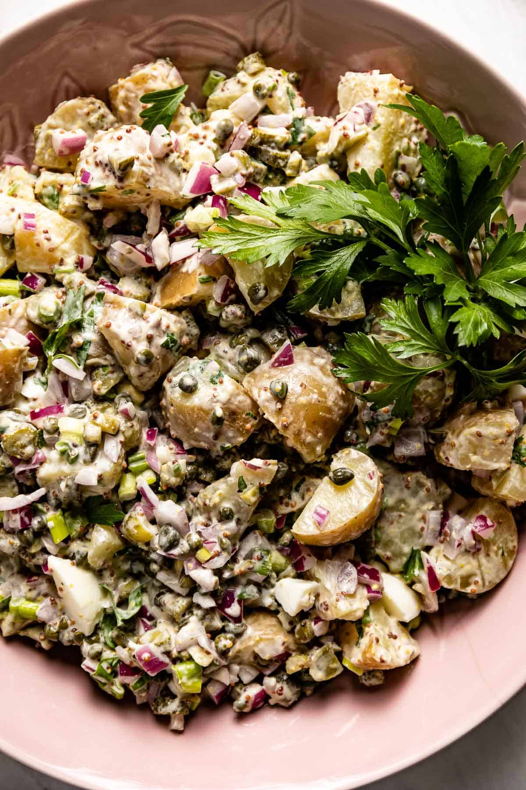

Shannon's Potato Salad

Description
This is aunt Shannon's fantastic potato salad recipe. Full of capers, pickles and shallots.
Ingredients
- Small potatos
- 3 shallots, finely chopped
- 1 tbsp capers
- 2 tbsp cornichon (little pickles)
- 3 tbsp mayonaise
- 3 tbsp olive oil
- 1 tbsp wine vinegar
- small bunch parsley roughly chopped
Steps
- Boil potatos in salted water until tender, about 20-30 minutes.
- Drain potatos and let cool
- Cut the potatos into chunks
- Add and mix the rest of ingredients with potatos